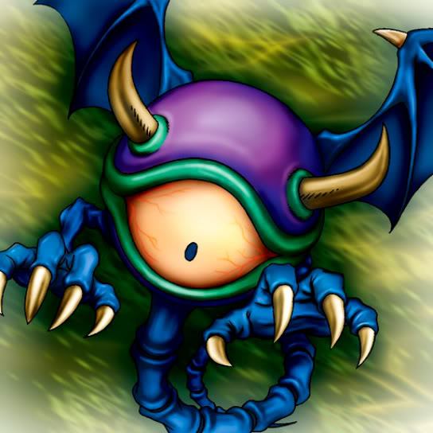

Meda Bat

STATS
ATK: 800
DEF: 400DECK COST
Deck Cost per Card: 12Fusion List (5 Possible Fusions)
- Meda Bat + Baby Dragon = Koumori Dragon
- Meda Bat + Barrel Lily = Rose Spectre of Dunn
- Meda Bat + Fungi of the Musk = Darkworld Thorns
- Meda Bat + Living Vase = Rose Spectre of Dunn
- Meda Bat + Rainbow Flower = Rose Spectre of Dunn